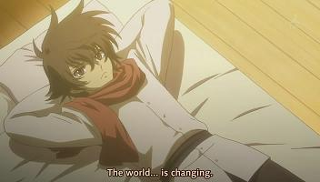
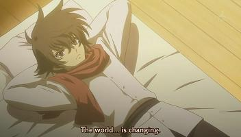

Ep 1: Celestial Being

It is 2301, and the Kurdish Republic is fighting against the forces of Azadistan. A number of MSER-04 Anfs go against Workloader and small ground forces, mostly child guerrillas. The battle follows a young boy and his struggle to survive. A man's voice is broadcasted across the battlefield, declaring that they are fighting for God and will destroy all who do not follow tradition. Hearing this, the boy says that in this world, there is no God. Cornered by two Anfs with their aim locked on him, all seemed lost. Suddenly, multiple pink beam shots take out all the Anfs from above. The boy looks up and sees a mobile suit, emitting a green light shaped like angel wings.
Fast forward a few years and it is 2307 and the AEU's ace pilot, Patrick Colasour, is demonstrating the AEU's latest mobile suit, the AEU Enact, in a war game. Union observers of MSWAD, Billy Katagiri and Graham Aker, note that the Enact's abilities mirror that of the Flag, which draws power from the solar collection grid. Suddenly, a mysterious mobile suit emitting a strange light, GN-001 Gundam Exia, comes down from the sky. Its pilot, the boy from Krugis, now Setsuna F. Seiei, is piloting Exia. Patrick decides to impulsively attack, only for his suit to be disabled and disarmed, literally. Graham grabs a pair of binoculars and notices the word GUNDAM, engraved on Exia's forehead. Setsuna/Exia then takes off, declaring phase 1 complete. Exia proceeds to phase 2, with the assistance of GN-002 Gundam Dynames, piloted by Lockon Stratos. The goal of phase 2 was revealing that the AEU was hiding hangars in the orbital elevator. The two units destroyed all AEU units launched to continue showing its power.
Phase 3 involved GN-003 Gundam Kyrios, piloted by Allelujah Haptism, to protect the Human Reform League's Orbital elevator, "Tenchu" from being attacked by terrorists. The terrorist were able to enter the protective shield of the array to attack the High Orbital Station. The Terrorist units Hellions were able to evade the HRL launched Tieren and fired off 3 missiles at the Elevator. With no chance of interception the situation seemed dire, before Kyrios swoops in and destroys the missiles. Proceeding to destroy all terrorist units, Kyrios was unable to destroy one unit, which was on a suicide mission towards the tower. Before it reached the tower, GN-005 Gundam Virtue, piloted by Tieria Erde obliterated the unit with its GN Bazooka.
Coincidentally within the Orbital elevator whilst it was celebrating its 10th anniversary of operation, a JNN news crew was present and able to film part of the combat. The news of the battles were circling the world with images of Virtue. Before long, a video recording is released, showing a bearded man, who introduces Celestial Being, a private army dedicated to eradicating war, by using force through the mobile weapon, Gundam. They will attack any countries, religion, or organization that promotes warfare.
As the message is broadcast world wide it shows glimpses of the three superpower leaders and several key characters within the series. The final words of the episode introduces that the pilots are called Gundam Meisters.
Ep 2: Gundam Meister

The episode starts out with Saji Crossroad and Louise Halevy meeting each other in the city. The HRL's leader is discussing taking action against Celestial Being and knowing only that they employ the mobile weapons known as Gundams. Meanwhile, the AEU are talking about their new mobile suit the AEU Enact couldn't take the Gundam Exia and that Celestial Being has to be an organization with technology superior than any faction in the world. The Union's president leaves the terrorist problem to the army after he comments it took 10 years to have a stable economy.
Lockon and Setsuna are on a private island when Wang Liu Mei and Hong Long comes to informed them about their second mission. Graham Aker and Billy Katagiri discuss about the Gundam's special particles when agent comes to inform Graham Aker and Billy Katagiri that they have orders from MSWAD. Celestial Being starts their second mission Gundams Exia, Dynames, Kyrios, and Virtue are sent to the old Sri Lanka to intervene between the three-century-old dispute between the majority Sinhalese and the minority faction Liberation Tigers of Tamil Eelam, also known as the Tamil Tigers. The latter is being supported by the Human Reform League, who supply them with Tierens.
Graham Aker and Billy Katagiri discuss HRL's true purpose is to control the solar energy pipeline. Graham decides to head to Ceylon to fight the Gundams. Meanwhile a battle between the Sinhalese and the Tamils goes on. The Sinhalese with their Anfs battle against the Tamils more advanced Tierens.Exia and Dynames directly attacked the mobile suits of both factions engaged in battle. Kyrios bombarded the Human Reform League's base camp. Last, Virtue sunk a large cruiser. Setsuna destroyed the remaining mobile suits leaving nobody alive. Everybody is shocked that Celestial Being attacked both sides.
Gundams Dynames, Kyrios, and Virtue are heading back while Setsuna slowly catches up. A Union transport plane flies by and drops Graham with his SVMS-01 Union Flag. Graham pulls out his plasma blade and attacks Setsuna. Graham expresses his emotions towards Gundams.
Ep 3: The Changing World


Graham's Union Flag locks blades with Setsuna's Gundam Exia and believes he was able to find the Gundam Exia because it wasn't spreading GN particles. Graham activates his thrusters to push Setsuna downward, but Setsuna breaks off and knocks away Graham's blade. Graham moves in again and grabs Setsuna's shoulder, but Setsuna pulls away. Graham falls back and fires the linear rifle. Setsuna dodges and uses his beam saber to slice Graham's linear rifle in half. Surprised by the beam saber, Graham breaks off and escapes. Back on the transport plane, Graham complains that he'd have to write a report about losing his rifle, but Billy says that the data gained on the Gundam is so valuable that it would've been worth losing the entire Flag. Graham comments that he thinks the Gundam's pilot is young because of the way the mobile suit moved. Setsuna begins spreading GN particles, which causes the plane to lose track of him. He wonders who the Flag pilot was.
At the JNN office, Kinue researches Aeolia's background and sees that he was an early advocate for the use of solar power. She wonders why, if he founded Celestial Being, they would wait 200 years to make their move. The AEU intelligence director is briefed on Aeolia and informed that he has no known descendants. They couldn't track down information on his finances, but the director isn't surprised, given the lax security of the 21st century. At the base station of the HRL's space elevator, Lockon, Allelujah and Tieria wait for Setsuna's arrival. Allelujah asks if something happened, and Setsuna answers that he wrote a report. Lockon tells Tieria that they'll leave space to him. Allelujah wonders if they'll be able to smuggle the Gundam Virtue back to space via the elevator, but Lockon doesn't think it will be a problem because it's been disguised as construction materials for the space colony. Allelujah comments that their main weakness is that the Ptolemaios' operational time is limited without the Gundams' four solar reactors, but Setsuna cuts him off and tells him not to discuss classified information in public. The other Gundam Meisters leave the station, and at the same time Sergei arrives from space. Several soldiers prepare to escort him to a commander, but he insists on traveling to Ceylon first because he doesn't believe things unless he sees them himself. Elsewhere, Graham and Billy report for duty at the Union's MSWAD headquarters. An officer informs them that they've been reassigned to a new anti-Gundam investigation team, to be headed by scientist Ralph Eifman. At school, Saji is bored during a lesson about the four centuries of conflict between Catholics and Protestants in Northern Ireland. Louise asks Saji at lunch if he's thought about the future and if she's a part of it, but he angers her by answering that he's only thought vaguely about it. Alejandro meets Wang at a bar, and she informs him that the third mission will begin soon.
 

Elsewhere, Sergei arrives at Ceylon and visits the base where the Gundams attacked earlier. An officer escorts him to the hangar where they're investigating the missile container dumped by Gundam Kyrios. Another officer explains that the container doesn't have any new technologies, nor is it of a design made by any nation or company. At MSWAD headquarters, Billy estimates that the Gundam's power output is probably about six times that of the Flag, and Graham comments that he's most impressed by the Gundam's maneuverability. Billy concludes that the maneuverability is due to the light emitted by the Gundam. Eifman introduces himself and says he'd like to capture a Gundam. Graham wants to have his Flag tuned up within a week, and he tells Eifman to disregard the stress that will place on the pilot. Graham then gets a call that the Gundams have appeared. In South Africa, Lockon attacks a mineral mine and easily takes out several Workloader units with his GN beam pistol. Lockon doesn't like taking on such easy targets, and the Workloaders eventually disarm and escape. Graham wants to launch and take on the one in Taribia, South America, but Eifman tells him not to. He explains that he hates narcotics, so if the Gundams are going to burn the drug fields, he'll support that. He concludes that they want to sever the sources of war. Allelujah flies over Taribian airspace and begins carpet bombing the drug fields. He says to himself that he'd do a mission like this anytime.
Sergei is informed that the third Gundam is in Ceylon, so he decides to launch in a Tieren and see it for himself. Setsuna destroys several Tierens and assumes his mission is complete until Sergei arrives in a Tieren High Mobility Type. Sergei tosses aside his gun and draws his carbon blade, which causes Setsuna to wonder if he's being tested. Sergei charges forward, and Setsuna uses his blade to cut off the arm holding the carbon blade. Sergei then grabs the Gundam Exia by the head and blacks out its cameras. He attempts to rip the head off, but Setsuna uses his beam saber to slice that arm off, as well as the Tieren's leg. In space, Tieria launches from the disguised container and returns to the Ptolemaios. After docking, the Gundam Virtue begins transferring energy to the ship. Sumeragi tells Tieria they should have toast because the others safely completed their missions, but he declines. Saji returns to his apartment and sees his new next door neighbor: Setsuna. Saji introduces himself, but Setsuna only gives his name before entering his own apartment. As Saji enters, Kinue is on her way out to work. Louise calls and tells him to turn on the news, which is carrying the story that the Real IRA has just announced it will cease armed terrorist activity. Speculation points to the disarmament coming as a result of Celestial Being's appearance. Amazed, Saji comments that the world is changing.